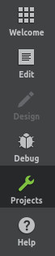
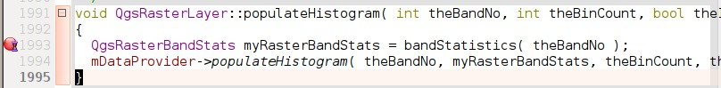

重要
翻訳は あなたが参加できる コミュニティの取り組みです。このページは現在 100.00% 翻訳されています。
4. QtCreatorとQGISで起動および実行する
QtCreatorは Qtライブラリ のメーカーによるIDEです。QtCreatorを使えばどんなC++プロジェクトでもビルドできますが、Qtベースのアプリケーション（モバイルアプリを含む）を開発する人向けに最適化されています。
4.1. QtCreatorをインストールする
Qt Creatorはすべての主要なプラットフォームで利用可能で、https://www.qt.io/download（オープンソースのルートへ）からダウンロードできます。インストール方法はプラットフォームによって異なります。
Unix系のプラットフォームを使っている場合は、コマンドラインを使うことができます。Debianの例：
sudo apt install qtcreator qtcreator-doc
インストール後、メニューにあるはずです。
4.2. プロジェクトを設定する
ソースコードを含むローカルのQGISクローンを入手し、必要なビルド依存物などをすべてインストール済みであると仮定します。詳しい説明は git access と dependency requirements にあります。
私たちのシステムでは、コードは $HOME/dev/cpp/QGIS にチェックアウトされ、記事の残りではそれを前提に書かれています。あなたのローカルシステムに合わせて、これらのパスを更新してください。
QtCreator を起動したら をします
それからこのファイルを参照して開くために、結果のファイル選択ダイアログを使用します：
$HOME/dev/cpp/QGIS/CMakeLists.txt

QtCreatorはプロジェクトを解析し、 プロジェクトの設定 ダイアログでビルド場所とオプションを要求されます。
QGISにデバッグ機能を持たせたいので、デバッグ項目のみを有効にして、ビルド場所を記入します：
 Select all kits をチェックして、Desktop エントリを有効にします
Select all kits をチェックして、Desktop エントリを有効にします- Debug サブ項目以外のすべてのチェックを外します
パスをビルドディレクトリで埋めます。ここでは、QtCreator専用のビルドディレクトリを作成します：
$HOME/dev/cpp/QGIS/build-master-qtcreatorディスク容量に余裕があれば、ブランチごとに別々のビルドディレクトリを作るのがいいでしょう。

これが基本です。Confiture Project ボタンを押すと、QtCreatorがソースツリーをスキャンしてオートコンプリートサポートを開始し、バックグラウンドで他のメンテナンスを行います。

ビルドに入る前にいくつか調整したいことがあります。
4.3. ビルド環境を設定する
QtCreator ウィンドウの左にある Projects アイコンをクリックしてください。
Build 設定タブを選択します（通常はデフォルトでアクティブになっています）。

このダイアログには Debug ビルド設定が表示され、 CMake セクションで設定を編集することができます。デフォルトの設定で最初のビルドを行うには十分ですが、必要に応じて以下のような機能を有効にすることもできます：
WITH_3D = ON は、3Dレンダリング
WITH_CUSTOM_WIDGETS = ON は、インタフェースデザイン用にQGISカスタムウィジェットを追加します
Apply Configuration Changes を押します。
これでビルドの準備ができました。ダイアログの左下にある  Build ボタン（または Ctrl+B ）を押して、プロジェクトのビルドを開始します！Qt Creator のコンパイルが始まりますが、デバイスによっては初回に時間がかかる場合があります。
Build ボタン（または Ctrl+B ）を押して、プロジェクトのビルドを開始します！Qt Creator のコンパイルが始まりますが、デバイスによっては初回に時間がかかる場合があります。
コンパイルの最後に、 Run ボタンを押してQGISを実行することができます。
Run ボタンを押してQGISを実行することができます。
QGISのコンパイルでは、ビルドディレクトリにバイナリも生成されます。したがって、次を使ってQGISをコマンドラインから実行することができます：
cd $HOME/dev/cpp/QGIS/build-master-qtcreator
./output/bin/qgis
QGISを実行ファイルとしてビルドディレクトリの外にインストールしたい場合があります。
CMAKE_INSTALL_PREFIXを書き込み可能な場所に設定します（ここでは$HOME/appsを使用します）。これにより、（例えばあなたのパッケージマネージャによる）既存のQGISのインストールが上書きされるのを防ぐことができます。
Apply Configuration Changes を押して設定を更新します
- ボタンを押します
ビルドが完了すると、
$HOME/apps/binフォルダにqgis実行ファイルが作成されています。
4.4. 実行してデバッグする
これでQGISを実行してデバッグする準備が整いました。ブレークポイントを設定するには、単にソースファイルを開き、左側の列をクリックします。
ウィンドウの左下にある  Start Debugging をクリックして、デバッガ下でQGISを起動します。
Start Debugging をクリックして、デバッガ下でQGISを起動します。